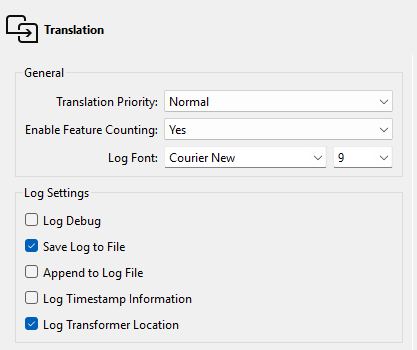
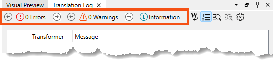

The log file always contains timestamps, regardless of this setting.
After completing this lesson, you’ll be able to:
In this lesson, you will:
The FME log file is your best friend for debugging. It tells you how long a translation took, where the time went, and how well FME used the available system resources.
The first thing to notice is that each line of the log is (in most cases) a separate message, for example:
Creating writer for format: Esri Shapefile
However, sometimes the message spans several lines, such as:
Data Caching is ON
The workspace will run slower because features are being recorded on all output ports regardless of whether a connection exists.There are several options to adjust what appears in the log file. To access these, select Utilities > FME Options > Translation:

The critical setting is Log Timestamp Information. This option turns on many optional fields in the log messages. These are:
For example:
2025-04-01 12:13:55| 0.8| 0.0|INFORM|Closing native MapInfo reader
You can use these timestamps to identify slow sections of your workspace.
The log file always contains timestamps, regardless of this setting.
A common requirement is to filter log messages so only messages of a specific type are displayed. For example, turning off INFORM and STAT messages can make spotting ERRORs and WARNs easier.
You can filter the log using the buttons at the top of the Translation Log window:

These buttons can toggle messages on and off in the log window only.
The Log Debug option (under FME Options) allows you to turn on debug messages in the log. These are extra log messages that do not appear by default. Debug logging records additional translation information to the job log. “Debug mode” is best used when an error has already occurred and you seek further information. For example, in the event of a web and database failure, “debug mode” will often record more detailed information about the request, response, and transaction to the job log.
You should turn this off when you are not using it, as it can dramaticly increase the size of your log files. This setting can become an issue on FME Flow in particular, where users might be running a workspace very often.